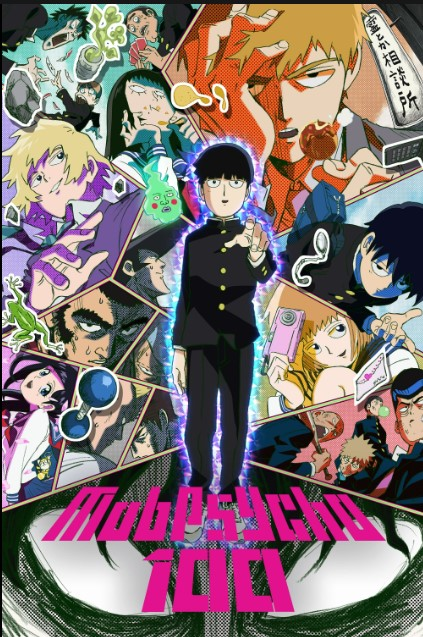
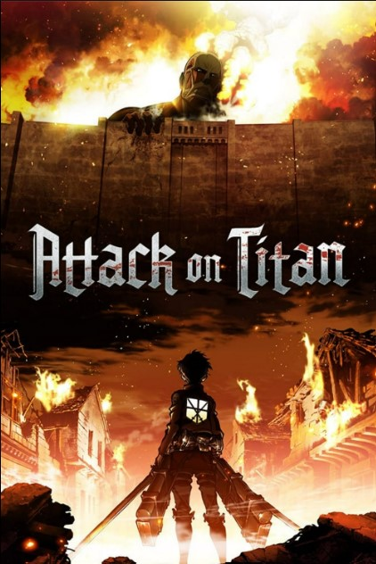
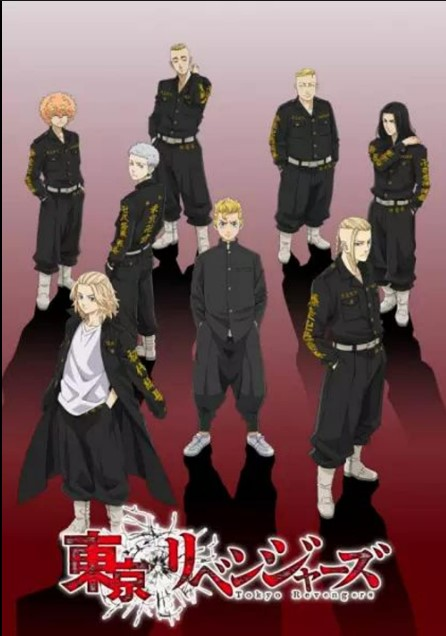
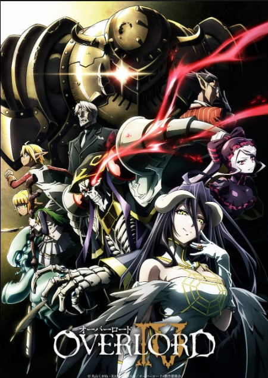
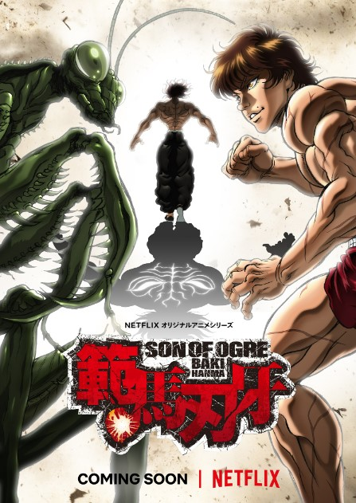
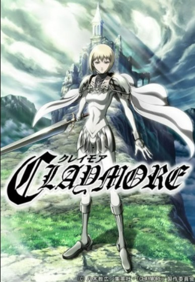
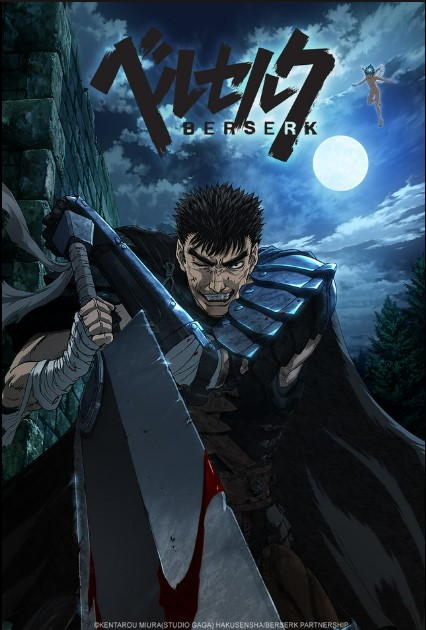
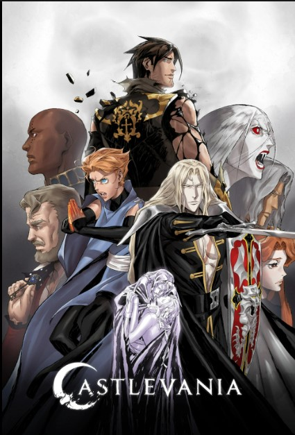

ACTION

MOB PSYCHO 100
Genres: Action, Comedy, Supernatural
Episodes:12
Rating: 8.6/10 · 31,883 votes
Mob Psycho 100 is a Japanese anime series written and illustrated by One. It was serialized on Shogakukan's Ura Sunday website from April
2012 to December 2017. It has been also available online on Shogakukan's mobile app MangaONE since December 2014. Shogakukan compiled
its chapters into sixteen tankōbon volumes. The story follows Shigeo Kageyama nicknamed Mob, a boy who has strong psychic powers, and his
struggles to find the simple happiness he is looking for.

ATTACK ON TITAN
Genres: Action, Dark fantasy, Post-apocalyptic
Episodes:87
Rating: 9/10 · 369,584 votes
Attack on Titan is a Japanese dark fantasy anime television series, adapted from the manga of the same name by Hajime Isayama, that premiered
on April 7, 2013. It has aired on NHK General TV in Japan, and Aniplus Asia in various Asia-Pacific countries. In the United States and Canada,
the series has been streamed on Crunchyroll, Funimation, Netflix, Amazon Prime Video, and Hulu. Attack on Titan has also aired on Adult Swim's
Toonami programming block in the U.S.

TOKYO REVENGERS
Genres: Action, Science Fiction, Yanki
Episodes:24
Rating: 8.1/10 · 16,705 votes
Tokyo Revengers is a Japanese anime series written and illustrated by Ken Wakui. It has been serialized in Kodansha's Weekly Shōnen
Magazine since March 2017, with its chapters collected in 29 tankōbon volumes as of August 2022. An anime television series adaptation
produced by Liden Films, aired from April to September 2021. A second season is set to premiere in January 2023. A live-action film
adaptation was released in Japan in July 2021, with its sequel set to be released in 2023.

OVERLORD
Genres: Action fiction, Science fiction, Adventure, Fantasy
Episodes:52
Rating: 7.7/10 · 10,369 votes
Overlord is a Japanese anime television series based on the eponymous light novel series written by Kugane Maruyama and illustrated by
so-bin. The series was produced by Madhouse under the direction of Naoyuki Itō, script composition by Yukie Sugawara, and music composed
by Shūji Katayama. Overlord first aired in Japan on AT-X from July 7 to September 29, 2015 with additional broadcasts by Tokyo MX, Sun
TV, KBS Kyoto, TV Aichi, and BS11. The second season moved to MBS.[3] The second season aired from January 10 to April 4, 2018. The third
season aired from July 11 to October 2, 2018. On May 8, 2021, a fourth season and an anime film were announced, with the film covering the
Holy Kingdom Arc of the series. The fourth season aired from July 5 to September 27, 2022.[7] The staff and cast members returned to
reprise their roles for the fourth season.

BAKI HANMA
Genres: Action, Science Fiction, Yanki
Episodes:12
Rating: 6.7/10 · 1,974 votes
Baki Hanma, also known as Hanma Baki – Son of Ogre, is a 2021 original net animation series adapted from the manga of the same name written
and illustrated by Keisuke Itagaki. It covers the third part of the manga Baki the Grappler series and is directed by Toshiki Hirano at TMS
Entertainment. On September 21, 2020, it was announced Baki Hanma will be adapted as the third series and the sequel to the second season of
the Netflix series. The 12-episode series was released on September 30, 2021, on Netflix. A second season was announced on March 24,2022. For
episodes 1–12, the first opening theme is "Treasure Pleasure" performed by Granrodeo while the first ending theme is "Unchained World"
performed by Generations from Exile Tribe.

CLAYMORE
Genres: Action, Adventure, Dark Fantasy
Episodes:26
Rating: 7.8/10 · 309,618 votes
Claymore is a Japanese dark fantasy anime series written and illustrated by Norihiro Yagi. It debuted in Shueisha's shōnen manga magazine
Monthly Shōnen Jump in June 2001, where it continued until the magazine was shut down in June 2007. Following a four-chapter monthly
publication in Weekly Shōnen Jump, the series was transferred to the newly launched Jump Square, where it was serialized from November
2007 until its conclusion in October 2014. Its chapters were collected in 27 tankōbon volumes.

BESERK
Genres: Action, Science Fiction, Yanki
Episodes:24
Rating: 6.8/10 · 6,211 votes
Berserk is a 2016 anime television series based on Kentaro Miura's anime series of the same name and an acting sequel to the Golden Age
Arc film trilogy. This is the second television series adaptation of the manga after the 1997 anime of the same name, covering the
Conviction arc from the manga. A second season, covering the first half of the Hawk of the Millennium Empire arc aired in 2017.

CASTLEVANIA
Genres: Horror, Action, Dark fantasy, Adventure, Fantasy, Drama
Episodes:32
Rating: 8.3/10 · 65,829 votes
Castlevania is an American adult animated dark fantasy action horror television series made for the streaming service Netflix and is
produced by Frederator Studios' Kevin Kolde and Fred Seibert. Based on the Japanese video game series of the same name by Konami, the
first two seasons adapt the 1989 entry Castlevania III: Dracula's Curse and follow Trevor Belmont, Alucard and Sypha Belnades as they
defend the nation of Wallachia from Dracula and his minions. Additionally, characters and elements from the 2005 entry Castlevania:
Curse of Darkness are featured beginning in the second season, and Alucard's backstory is drawn from Castlevania: Symphony of the Night.
The art style is heavily influenced by Japanese animation and Ayami Kojima's artwork.